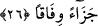

1- Peygamberimiz (s.a.)’in adını, sıfatını ve dâvetini duyan kâfirler. Bunlar Daru’l-
İslâm’a komşu ülkelerde yaşayan kâfirlerdir. İşte bunlar iman etmezlerse ebediyen
cehennemde kalacaklardır; hiçbir mâzeretleri yoktur.
2- Peygamber Efendimiz’in adını duyup, sıfatını duymayan kâfirler. Bunlar,
Muhammed adında müslüman ve yalancı birisinin çıktığını ve kendisinin peygamber
olduğunu iddiâ ettiğini duyan kâfirlerdir.
3- Peygamber Efendimiz’in ne adını, ne sanını duymamış kâfirler. İkinci ve üçüncü
grubtaki kâfirler kâfir olmakta mazurdurlar. Nitekim bu kâfir ayırımının bir benzeri,
İmam el-Eş’ari’den Muslihuddin el-Akaid şerhinde naklolunmuştur.
Davudi Kayseri Fusus şerhinde der ki: Vaîd, Allah Teâlâ’nın “el-Muntakim/intikam
alan” ismine taalluk eden azabtır. Bu azab sadece beş grub zümre için geçerlidir, çünkü
cehennemlikler beşe ayrılırlar. Bunlar; müşrikler, kâfirler, münafıklar, müminlerin
isyankârlarıdır. Bunlar da kendi aralarında muvahhid, arif fakat amel etmeyen ve
mahcûb şeklinde ikiye ayrılırlar. el-Muntakim olan Allah’ın sultanı onlar üzerine
tasallut ettiği zaman cahîmin ateşiyle azab görürler. Azab çeşitleri, azab görecekler için
ebedî değildir. Çünkü şefâat edenlerin şefâatı sâyesinde onların azabları
kesilebilecektir.
26. (Dünyada yaptıklarına) uygun karşılık olarak.
“Cezâen vifâkan” yâni onlar böylece amellerine ve ahlaklarına uygun bir karşılıkla
karşılık görmüşlerdir. Gördükleri bu karşılık sanki uygunluğun ta kendisidir. Böylece
ifâdede bir mübâlağa elde edilmiş olur. Ayrıca yukardaki ifâdeyi “cezâen zâ vifâkin”
şeklinde anlamak da mümkündür. Buna göre kelimenin başında muzaf hazfedilmiş olur
ki “uygunluğu olan bir cezâ” şeklinde tefsir edilebilir. Veya bu ifâdeyi “vâfekaha
vifâkan” şeklinde masdarın pekiştirilmesi olarak da anlayabiliriz. Bu takdirde “vifâkan”
kelimesi “cezâ” kelimesinin sıfatı olarak fiili bir başka ifâdeyle karşılık görme işini
pekiştirmiş olur.
Yapılan amel ile şimdi görülen karşılık arasındaki uygunluğa gelince onlar dünyada
iken büyük bir günah; yâni küfür günahını işlemişlerdi. Buna karşılık âhirette büyük bir
cezâ ile yâni cehennem ateşinde azâba uğrama cezâsıyla cezâlandırılmış olmaktadırlar.
Şirkten daha büyük günah olmadığı gibi, aynı şekilde ateşle azap edilmekten daha büyük
bir cezâ da yoktur. Kötülüğün cezâsı benzeri kötülüktür ki ikisi birbirine tam uygun
düşmüştür.
Bâzı âlimlere göre yukardaki ifâdeyi “kâne vifâkan” şeklinde anlamak mümkündür. Bu
durumda âyetin mânâsı; “bu öyle uygun bir cezâdır ki hak edilenden ne fazladır ne de
eksiktir” demek olur.